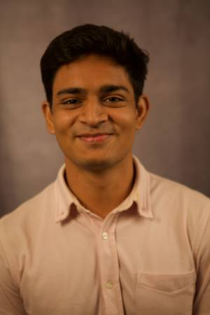

About the Workshop
Recent advances in humanoid robotics have enabled increasingly complex locomotion and manipulation. However, many existing approaches still rely primarily on proprioceptive sensing, task-specific demonstrations, or manually designed objectives. More capable and generalizable humanoid behaviors will require the effective use of diverse data sources, including human motion, video, teleoperation, vision, force and tactile sensing, and robot interaction data.
This workshop will bring together researchers in humanoid robotics, robot learning, computer vision, biomechanics, and multimodal learning to discuss how such data can support whole-body control and manipulation. The scope includes data collection and representation, motion retargeting, reinforcement and imitation learning, loco-manipulation, multi-contact interaction, sim-to-real transfer, and real-world evaluation.
Particular attention will be given to methods that go beyond simple motion imitation or proprioception-only learning and enable humanoids to perform complex, interactive, and long-horizon tasks.
Topics of Interest
Topics include, but are not limited to:
- Whole-body control and loco-manipulation
- Vision, tactile, force, and contact sensing
- Multimodal learning for humanoid robots
- Human motion, video, and demonstration data
- Motion reconstruction and retargeting
- Reinforcement and imitation learning
- Teleoperation and robot interaction data
- Sim-to-real transfer and domain adaptation
Call for Posters
We invite poster contributions presenting recent research, preliminary results, ongoing work, and emerging ideas related to multimodal data, learning, whole-body control, locomotion, and manipulation for humanoid robots.
The poster session is intended to encourage discussion and exchange among researchers working across robotics, machine learning, computer vision, biomechanics, and related areas.
- Submission format
- TBD
- Submission deadline
- TBD
- Notification
- TBD
- Submission link
- TBD
Additional submission guidelines will be announced soon.
Invited Speakers
TBD Speaker information will be announced soon.
Program
TBD The workshop time and detailed program will be announced soon.
Organizers

Yisoo Lee
Korea Institute of Science and Technology
Yuke Zhu
The University of Texas at Austin
Youngwoon Lee
Seoul National University
Hyosang Lee
Eindhoven University of Technology

Vihaan Misra
Carnegie Mellon University
Uksang Yoo
University of California, Berkeley
Contact
For questions about the workshop, contact Yisoo Lee at KIST: